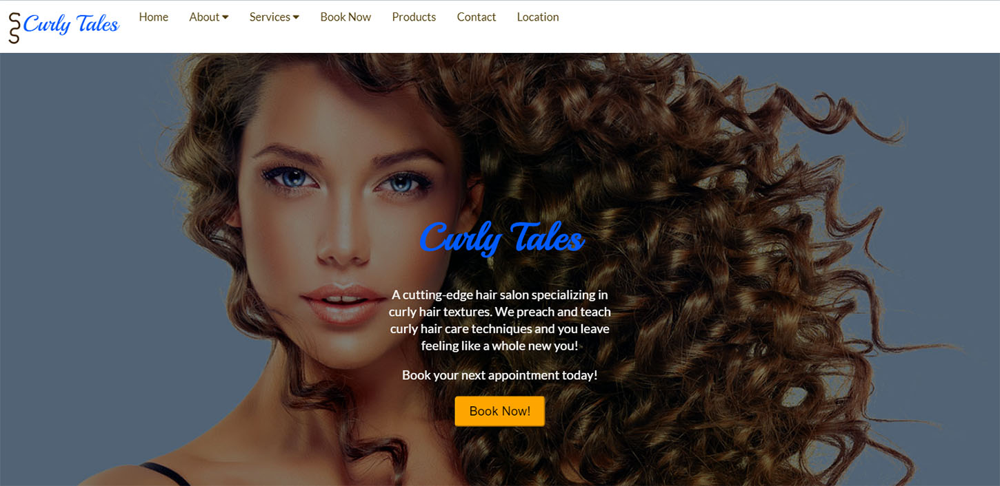
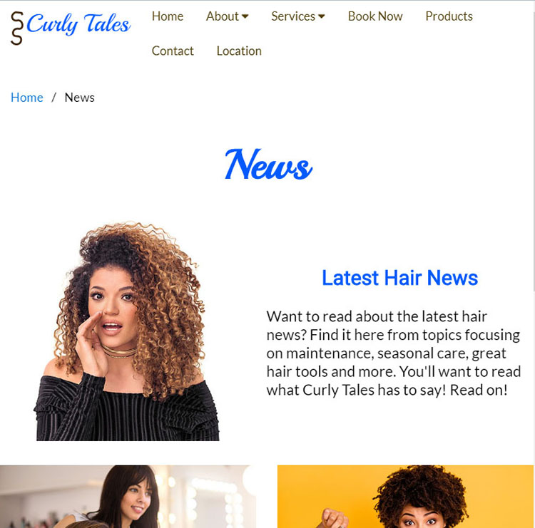
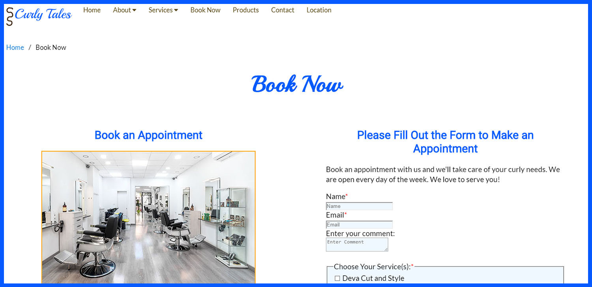
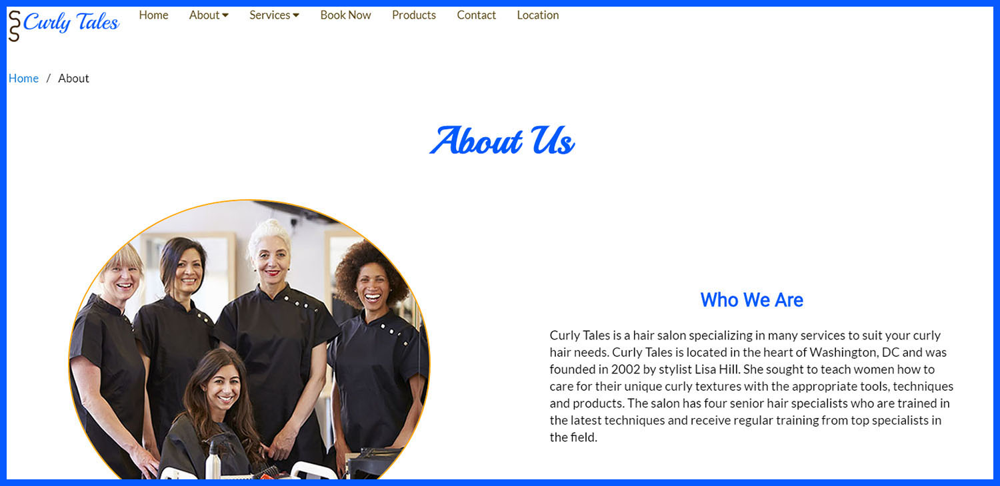

Skills: User Persona, Brand, Sitemap, Wireframe, Mockup, SEO, HTML5, CSS, Flexbox, CSS Grids, Sass
Curly Tales is a mock website for a business that someone else owns. It is a website for a local hair salon business specializing in curly hair styles and cuts.
The business is a hair salon that provides styling services specializing in curly hair. The goal of the business is to:
The identification of the target audience will influence decisions made about the content of the website such as the text, keywords, news blog and images used to reflect the lives and experiences of the audience. For example, images of curly haired women with a variety of hair textures from loose to tight curls as well as blog articles featuring topics on the current natural hair movement in the culture.
The website will continue to grow as far as e-commerce functionality goes. The plan is to add an online cart so that users can add hair services to their cart for checkout instead of calling to make an appointment. This will also involve a login feature to make appointments.
In order to make the site easier to maintain, I will set a bi-monthly maintenance schedule.
Tasks that will be required to maintain the site are: checking for broken links, running security scans for any viruses or vulnerabilities, backing up the website in case the site content is attacked, run posting weekly news articles,
The tasks will need to occur twice a month with the exception of the weekly news articles.
The top of the site contains the header, the middle of the site has the main content including a a call-to-action and a heading on each page. The footer is at the bottom of the page with a navigation menu mimicking the top navigation. The header will hold the logo and navigation at the top of each page.
For the About page, the subtopic is: Stylists. For the Services page, the subtopic is: Gallery.
The navigation will have the menu items: Home, About, Stylists, Services, Gallery, Book Now, News, Contact and Location. The subtopics are under the About and Services menu items.
The website content will be organized as a double-column homepage with single and double-column interior pages. The navigation will be visible in the header section in a horizontal direction for desktop and tablet views. The mobile view will have a hamburger menu that drops down.




The website will utilize e-commerce functionality with Paypal after the short term goals of the website are met. Users will be able to add hair services to their cart for checkout instead of calling to make an appointment. This will also involve a login feature to schedule appointments.
The login content to schedule appointments will be password protected with double-factor authentication. Users will also be required to update their passwords after 365 days. This will protect their data from being stolen.
During the first phase of the website creation, users will not have to create accounts. They will call the phone number to schedule appointments. Later with the growth of the business, users will need to create accounts to log in to create a profile for their account.
I will make sure to use a strong password for the host site to prevent defacement and loss of content, enable HTTPS to secure the site, continuously backup the website bi-monthly as well as enact a content security policy or CSP to prevent third parties from uploading viral JavaScript.
Some criteria that I would use in selecting a web host is based on the services they provide for the site's basic/immediate needs and for the site's future/growth needs. At first, when creating the site, SSL and SEO is what's needed. The hosting service will need to provide this service. For sites that want to use WordPress, it's beneficial if the hosting service allows for WordPress capabilities. E-mail services are also what to look for. For sites that need dedicated servers for custom configuration, they can seek hosting that provides dedicated servers.
At first, the website will require SSL special technologies to keep the site secure. At the start, the focus is on getting the website up and running to attain the short term goals for the site. In the future, the site will need a shopping cart, an online scheduler and Paypal functionality.
The website will not need programming for the first phase in getting the site up and running. However, as the site uses e-commerce functionality and increased interactivity, JavaScript can be used.
The website will be marketed by boosting the SEO ranking and creating social media accounts to engage customers online.
SEO elements that can be covered in the planning and building the site are: using keywords and phrases in the URL, title and meta tags as well as throughout the content. Include site headings on each page and add alt text for images and submit the site to Google. Avoid practices that could affect SEO ranking such as: poor links, adding text inside images (crawlers cannot access the content) and duplicating pages. These factors affect SEO ranking and subsequent marketing of the business.